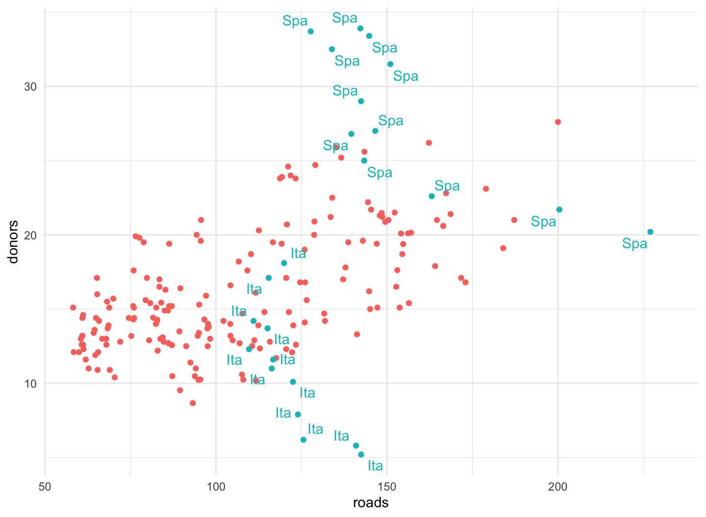

February 22, 2022
Add labels, make notes, and work with models
The gss_sm data and summary
- The
socvizpackage includes thegss_smdata frame.gss_smis a dataset containing an extract from the 2016 General Social Survey.
- Summarize the relative frequencies of educational degrees by race.
- The sum of the relative frequencies of educational degrees is one for each race.
library(tidyverse) library(socviz) library(gapminder) library(skimr) library(ggrepel) library(ggthemes) theme_set(theme_minimal()) view(gss_sm)
The gss_sm data and summary
## # A tibble: 18 × 4 ## # Groups: race [3] ## race degree N pct ## <fct> <fct> <int> <dbl> ## 1 White Lt High School 197 9 ## 2 White High School 1057 50 ## 3 White Junior College 166 8 ## 4 White Bachelor 426 20 ## 5 White Graduate 250 12 ## 6 White <NA> 4 0 ## 7 Black Lt High School 60 12 ## 8 Black High School 292 60 ## 9 Black Junior College 33 7 ## 10 Black Bachelor 71 14 ## 11 Black Graduate 31 6 ## 12 Black <NA> 3 1 ## 13 Other Lt High School 71 26 ## 14 Other High School 112 40 ## 15 Other Junior College 17 6 ## 16 Other Bachelor 39 14 ## 17 Other Graduate 37 13 ## 18 Other <NA> 1 0
The organdata data
- The
socvizpackage includes theorgandatadata frame.organdatacontains a little more than a decade’s worth of information on the donation of organs for transplants in seventeen OECD countries.
library(tidyverse) library(socviz) library(skimr) library(ggrepel) theme_set(theme_minimal()) ?organdata glimpse(organdata)
## Rows: 238 ## Columns: 22 ## $ country <chr> "Australia", "Australia", "Australia", "Austr… ## $ year <date> NA, 1991-01-01, 1992-01-01, 1993-01-01, 1994… ## $ donors <dbl> NA, 12.09, 12.35, 12.51, 10.25, 10.18, 10.59,… ## $ pop <int> 17065, 17284, 17495, 17667, 17855, 18072, 183… ## $ pop_dens <dbl> 0.2204433, 0.2232723, 0.2259980, 0.2282198, 0… ## $ gdp <int> 16774, 17171, 17914, 18883, 19849, 21079, 219… ## $ gdp_lag <int> 16591, 16774, 17171, 17914, 18883, 19849, 210… ## $ health <dbl> 1300, 1379, 1455, 1540, 1626, 1737, 1846, 194… ## $ health_lag <dbl> 1224, 1300, 1379, 1455, 1540, 1626, 1737, 184… ## $ pubhealth <dbl> 4.8, 5.4, 5.4, 5.4, 5.4, 5.5, 5.6, 5.7, 5.9, … ## $ roads <dbl> 136.59537, 122.25179, 112.83224, 110.54508, 1… ## $ cerebvas <int> 682, 647, 630, 611, 631, 592, 576, 525, 516, … ## $ assault <int> 21, 19, 17, 18, 17, 16, 17, 17, 16, 15, 16, 1… ## $ external <int> 444, 425, 406, 376, 387, 371, 395, 385, 410, … ## $ txp_pop <dbl> 0.9375916, 0.9257116, 0.9145470, 0.9056433, 0… ## $ world <chr> "Liberal", "Liberal", "Liberal", "Liberal", "… ## $ opt <chr> "In", "In", "In", "In", "In", "In", "In", "In… ## $ consent_law <chr> "Informed", "Informed", "Informed", "Informed… ## $ consent_practice <chr> "Informed", "Informed", "Informed", "Informed… ## $ consistent <chr> "Yes", "Yes", "Yes", "Yes", "Yes", "Yes", "Ye… ## $ ccode <chr> "Oz", "Oz", "Oz", "Oz", "Oz", "Oz", "Oz", "Oz… ## $ ind <lgl> FALSE, FALSE, FALSE, FALSE, FALSE, FALSE, FAL…
skim(organdata)
| Name | organdata |
| Number of rows | 238 |
| Number of columns | 22 |
| _______________________ | |
| Column type frequency: | |
| character | 7 |
| Date | 1 |
| logical | 1 |
| numeric | 13 |
| ________________________ | |
| Group variables | None |
Variable type: character
| skim_variable | n_missing | complete_rate | min | max | empty | n_unique | whitespace |
|---|---|---|---|---|---|---|---|
| country | 0 | 1.00 | 5 | 14 | 0 | 17 | 0 |
| world | 14 | 0.94 | 6 | 11 | 0 | 3 | 0 |
| opt | 28 | 0.88 | 2 | 3 | 0 | 2 | 0 |
| consent_law | 0 | 1.00 | 8 | 8 | 0 | 2 | 0 |
| consent_practice | 0 | 1.00 | 8 | 8 | 0 | 2 | 0 |
| consistent | 0 | 1.00 | 2 | 3 | 0 | 2 | 0 |
| ccode | 0 | 1.00 | 2 | 4 | 0 | 17 | 0 |
Variable type: Date
| skim_variable | n_missing | complete_rate | min | max | median | n_unique |
|---|---|---|---|---|---|---|
| year | 34 | 0.86 | 1991-01-01 | 2002-01-01 | 1996-07-02 | 12 |
Variable type: logical
| skim_variable | n_missing | complete_rate | mean | count |
|---|---|---|---|---|
| ind | 4 | 0.98 | 0.1 | FAL: 210, TRU: 24 |
Variable type: numeric
| skim_variable | n_missing | complete_rate | mean | sd | p0 | p25 | p50 | p75 | p100 | hist |
|---|---|---|---|---|---|---|---|---|---|---|
| donors | 34 | 0.86 | 16.48 | 5.11 | 5.20 | 13.00 | 15.10 | 19.60 | 33.90 | ▁▇▅▂▁ |
| pop | 17 | 0.93 | 39921.29 | 62219.22 | 3514.00 | 6938.00 | 15531.00 | 57301.00 | 288369.00 | ▇▁▁▁▁ |
| pop_dens | 17 | 0.93 | 12.00 | 11.09 | 0.22 | 1.94 | 9.49 | 19.11 | 38.89 | ▇▃▃▂▁ |
| gdp | 17 | 0.93 | 22986.18 | 4665.92 | 12917.00 | 19546.00 | 22756.00 | 26180.00 | 36554.00 | ▂▇▇▃▁ |
| gdp_lag | 0 | 1.00 | 22574.92 | 4790.71 | 11434.00 | 19034.25 | 22158.00 | 25886.50 | 36554.00 | ▂▇▇▃▁ |
| health | 0 | 1.00 | 2073.75 | 733.59 | 791.00 | 1581.00 | 1956.00 | 2407.50 | 5665.00 | ▆▇▂▁▁ |
| health_lag | 0 | 1.00 | 1972.99 | 699.24 | 727.00 | 1542.00 | 1850.50 | 2290.25 | 5267.00 | ▆▇▂▁▁ |
| pubhealth | 21 | 0.91 | 6.19 | 0.92 | 4.30 | 5.50 | 6.00 | 6.90 | 8.80 | ▂▇▅▃▁ |
| roads | 17 | 0.93 | 113.04 | 36.33 | 58.21 | 83.46 | 111.22 | 139.57 | 232.48 | ▇▇▆▂▁ |
| cerebvas | 17 | 0.93 | 610.80 | 144.45 | 300.00 | 500.00 | 604.00 | 698.00 | 957.00 | ▂▅▇▃▂ |
| assault | 17 | 0.93 | 16.53 | 17.33 | 4.00 | 9.00 | 11.00 | 16.00 | 103.00 | ▇▁▁▁▁ |
| external | 17 | 0.93 | 450.06 | 118.19 | 258.00 | 367.00 | 421.00 | 534.00 | 853.00 | ▆▇▅▁▁ |
| txp_pop | 17 | 0.93 | 0.72 | 0.20 | 0.22 | 0.63 | 0.71 | 0.83 | 1.12 | ▁▂▇▃▃ |
view(organdata)
Continuous variables by group or category
What we would like to do is apply the
mean()andsd()functions to every numerical variable inorgandata, but only the numerical ones.summarize_if()examines each column in our data and applies a test to it.summarize_if()only summarizes if the test is passed, that is, if it returns a value ofTRUE.
Continuous variables by group or category
by_country <- organdata %>% group_by(consent_law, country) %>%
summarize_if(is.numeric, funs(mean, sd), na.rm = TRUE) %>%
ungroup()
by_country
## # A tibble: 17 × 28 ## consent_law country donors_mean pop_mean pop_dens_mean gdp_mean ## <chr> <chr> <dbl> <dbl> <dbl> <dbl> ## 1 Informed Australia 10.6 18318. 0.237 22179. ## 2 Informed Canada 14.0 29608. 0.297 23711. ## 3 Informed Denmark 13.1 5257. 12.2 23722. ## 4 Informed Germany 13.0 80255. 22.5 22163. ## 5 Informed Ireland 19.8 3674. 5.23 20824. ## 6 Informed Netherlands 13.7 15548. 37.4 23013. ## 7 Informed United Kingd… 13.5 58187. 24.0 21359. ## 8 Informed United States 20.0 269330. 2.80 29212. ## 9 Presumed Austria 23.5 7927. 9.45 23876. ## 10 Presumed Belgium 21.9 10153. 30.7 22500. ## 11 Presumed Finland 18.4 5112. 1.51 21019. ## 12 Presumed France 16.8 58056. 10.5 22603. ## 13 Presumed Italy 11.1 57360. 19.0 21554. ## 14 Presumed Norway 15.4 4386. 1.35 26448. ## 15 Presumed Spain 28.1 39666. 7.84 16933 ## 16 Presumed Sweden 13.1 8789. 1.95 22415. ## 17 Presumed Switzerland 14.2 7037. 17.0 27233 ## # … with 22 more variables: gdp_lag_mean <dbl>, health_mean <dbl>, ## # health_lag_mean <dbl>, pubhealth_mean <dbl>, roads_mean <dbl>, ## # cerebvas_mean <dbl>, assault_mean <dbl>, external_mean <dbl>, ## # txp_pop_mean <dbl>, donors_sd <dbl>, pop_sd <dbl>, ## # pop_dens_sd <dbl>, gdp_sd <dbl>, gdp_lag_sd <dbl>, health_sd <dbl>, ## # health_lag_sd <dbl>, pubhealth_sd <dbl>, roads_sd <dbl>, ## # cerebvas_sd <dbl>, assault_sd <dbl>, external_sd <dbl>, …
Cleveland dotplot
p <- ggplot(data = by_country,
mapping = aes(x = donors_mean, y = reorder(country, donors_mean),
color = consent_law))
p + geom_point(size=3) +
labs(x = "Donor Procurement Rate",
y = "", color = "Consent Law") +
theme(legend.position="top")
- Cleveland dotplot is a simple and extremely effective method of presenting data that is usually better than either a bar chart or a table.
Cleveland dotplot
Plot text directly
p_title <- "Presidential Elections: Popular & Electoral College Margins"
p_subtitle <- "1824-2016"
p_caption <- "Data for 2016 are provisional."
x_label <- "Winner's share of Popular Vote"
y_label <- "Winner's share of Electoral College Votes"
p <- ggplot(elections_historic, aes(x = popular_pct, y = ec_pct, label = winner_label))
p + geom_hline(yintercept = 0.5, size = 1.4, color = "gray80") +
geom_vline(xintercept = 0.5, size = 1.4, color = "gray80") +
geom_point() + geom_text_repel() +
scale_x_continuous(labels = scales::percent) +
scale_y_continuous(labels = scales::percent) +
labs(x = x_label, y = y_label, title = p_title, subtitle = p_subtitle,
caption = p_caption)
geom_hline()andgeom_vline()to make the lines.geom_text_repel()makes sure the labels do not overlap with each other, or obscure other points.
Plot text directly

Label outliers
p <- ggplot(data = by_country,
mapping = aes(x = gdp_mean, y = health_mean))
p + geom_point() +
geom_text_repel(data = subset(by_country, gdp_mean > 25000),
mapping = aes(label = country))
- Sometimes we want to pick out some points of interest in the data without labeling every single item.
- We do this using the
subset()function.
- We do this using the
Label outliers
Label outliers
p + geom_point() +
geom_text_repel(data = subset(by_country,
gdp_mean > 25000 | health_mean < 1500 |
country %in% "Belgium"),
mapping = aes(label = country))
Label outliers

Label outliers
organdata$ind <- organdata$ccode %in% c("Ita", "Spa") &
organdata$year > 1998
p <- ggplot(data = organdata,
mapping = aes(x = roads,
y = donors, color = ind))
p + geom_point() +
geom_text_repel(data = subset(organdata, ind),
mapping = aes(label = ccode)) +
guides(label = FALSE, color = FALSE)
Label outliers

Write and draw in the plot area
p <- ggplot(data = organdata, mapping = aes(x = roads, y = donors))
p + geom_point() + annotate(geom = "text", x = 91, y = 33,
label = "A surprisingly high \n recovery rate.",
hjust = 0)
- Sometimes we want to annotate the figure directly.
- We use
annotate()to point out something important that is not mapped to a variable.
- We use
Write and draw in the plot area

Write and draw in the plot area
p <- ggplot(data = organdata,
mapping = aes(x = roads, y = donors))
p + geom_point() +
annotate(geom = "rect", xmin = 125, xmax = 155,
ymin = 30, ymax = 35, fill = "red", alpha = 0.2) +
annotate(geom = "text", x = 157, y = 33,
label = "A surprisingly high \n recovery rate.", hjust = 0)
- We can use
annotate()to draw rectangles, line segments, and arrows.
Write and draw in the plot area
Understanding scales, guides, and themes
If you want to adjust how that scale is marked or graduated, then you use a
scale_function.- \(\color{green}{\text{scale}}\)_\(\color{orange}{\text{<MAPPING>}}\)_\(\color{orange}{\text{<KIND>}}\)()
The
guides()function allows for adjustments to a legend or key to help the reader interpret the graph.- Making the legend disappear
- Adjusting the arrangement of the key in legends and colorbars.
The
theme()function allows for adjustments to cosmetic features:- Background color
- Typeface used for labels
- Placement of the legend
Understanding scales, guides, and themes
p <- ggplot(data = organdata,
mapping = aes(x = roads,
y = donors,
color = world))
p + geom_point()
- The
xandyscales are both continuous. - The
colormapping also has a scale:- The
worldmeasure is an unordered categorical variable, so its scale is discrete.
- The
- Mappings like
color,fill,shape, andsizehave scales that we might want to customize or adjust.- If we want to adjust them, we use one of the
scale_functions.
- If we want to adjust them, we use one of the
Understanding scales, guides, and themes

Understanding scales, guides, and themes
p <- ggplot(data = organdata,
mapping = aes(x = roads,
y = donors,
color = world))
p + geom_point() +
scale_x_log10() +
scale_y_continuous(breaks = c(5, 15, 25),
labels = c("Five", "Fifteen", "Twenty Five"))
- We may end up with a lot of individual
scale_functions:scale_x_continuous()controlsxscales for continuous variables.scale_y_discrete()adjustsyscales for discrete variables.scale_x_log10()transforms anxmapping to a base 10 log scale.
- If you want to adjust the labels or tick marks on a scale, you need to know which mapping it is for and what sort of scale it is.
Understanding scales, guides, and themes

Understanding scales, guides, and themes
p <- ggplot(data = organdata,
mapping = aes(x = roads,
y = donors,
color = world))
p + geom_point() +
scale_color_discrete(labels =
c("Corporatist", "Liberal",
"Social Democratic", "Unclassified")) +
labs(x = "Road Deaths",
y = "Donor Procurement",
color = "Welfare State")
When working with a scale that produces a legend, we can also use appropriate
scale_functions to specify the labels in the key.To change the title of the legend, however, we use the
labs()function, which lets us label all the mappings.
Understanding scales, guides, and themes

Understanding scales, guides, and themes
p <- ggplot(data = organdata,
mapping = aes(x = roads,
y = donors,
color = world))
p + geom_point() +
scale_color_discrete(labels =
c("Corporatist", "Liberal",
"Social Democratic", "Unclassified")) +
labs(x = "Road Deaths",
y = "Donor Procurement",
color = "Welfare State") +
theme(legend.position = "top")
Adding
+ theme(legend.position = "top")will move the legend as instructedAdding
+ guides(color = "none")make the legend disappear altogether here.
Understanding scales, guides, and themes
gapminder data
- The
gapminderpackage include thegapminderdata frame.
gapminder
## # A tibble: 1,704 × 6 ## country continent year lifeExp pop gdpPercap ## <fct> <fct> <int> <dbl> <int> <dbl> ## 1 Afghanistan Asia 1952 28.8 8425333 779. ## 2 Afghanistan Asia 1957 30.3 9240934 821. ## 3 Afghanistan Asia 1962 32.0 10267083 853. ## 4 Afghanistan Asia 1967 34.0 11537966 836. ## 5 Afghanistan Asia 1972 36.1 13079460 740. ## 6 Afghanistan Asia 1977 38.4 14880372 786. ## 7 Afghanistan Asia 1982 39.9 12881816 978. ## 8 Afghanistan Asia 1987 40.8 13867957 852. ## 9 Afghanistan Asia 1992 41.7 16317921 649. ## 10 Afghanistan Asia 1997 41.8 22227415 635. ## # … with 1,694 more rows
skim(gapminder)
| Name | gapminder |
| Number of rows | 1704 |
| Number of columns | 6 |
| _______________________ | |
| Column type frequency: | |
| factor | 2 |
| numeric | 4 |
| ________________________ | |
| Group variables | None |
Variable type: factor
| skim_variable | n_missing | complete_rate | ordered | n_unique | top_counts |
|---|---|---|---|---|---|
| country | 0 | 1 | FALSE | 142 | Afg: 12, Alb: 12, Alg: 12, Ang: 12 |
| continent | 0 | 1 | FALSE | 5 | Afr: 624, Asi: 396, Eur: 360, Ame: 300 |
Variable type: numeric
| skim_variable | n_missing | complete_rate | mean | sd | p0 | p25 | p50 | p75 | p100 | hist |
|---|---|---|---|---|---|---|---|---|---|---|
| year | 0 | 1 | 1979.50 | 17.27 | 1952.00 | 1965.75 | 1979.50 | 1993.25 | 2007.0 | ▇▅▅▅▇ |
| lifeExp | 0 | 1 | 59.47 | 12.92 | 23.60 | 48.20 | 60.71 | 70.85 | 82.6 | ▁▆▇▇▇ |
| pop | 0 | 1 | 29601212.32 | 106157896.74 | 60011.00 | 2793664.00 | 7023595.50 | 19585221.75 | 1318683096.0 | ▇▁▁▁▁ |
| gdpPercap | 0 | 1 | 7215.33 | 9857.45 | 241.17 | 1202.06 | 3531.85 | 9325.46 | 113523.1 | ▇▁▁▁▁ |
str(gapminder)
## tibble [1,704 × 6] (S3: tbl_df/tbl/data.frame) ## $ country : Factor w/ 142 levels "Afghanistan",..: 1 1 1 1 1 1 1 1 1 1 ... ## $ continent: Factor w/ 5 levels "Africa","Americas",..: 3 3 3 3 3 3 3 3 3 3 ... ## $ year : int [1:1704] 1952 1957 1962 1967 1972 1977 1982 1987 1992 1997 ... ## $ lifeExp : num [1:1704] 28.8 30.3 32 34 36.1 ... ## $ pop : int [1:1704] 8425333 9240934 10267083 11537966 13079460 14880372 12881816 13867957 16317921 22227415 ... ## $ gdpPercap: num [1:1704] 779 821 853 836 740 ...
- We can use the
str()function to learn more about the internal structure of any object.
Work with models
- Let us consider the linear regression of
lifeExpongdpPercap,pop, andcontinent.
out <- lm(formula = lifeExp ~ gdpPercap + pop + continent,
data = gapminder)
summary(out)
## ## Call: ## lm(formula = lifeExp ~ gdpPercap + pop + continent, data = gapminder) ## ## Residuals: ## Min 1Q Median 3Q Max ## -49.161 -4.486 0.297 5.110 25.175 ## ## Coefficients: ## Estimate Std. Error t value Pr(>|t|) ## (Intercept) 4.781e+01 3.395e-01 140.819 < 2e-16 *** ## gdpPercap 4.495e-04 2.346e-05 19.158 < 2e-16 *** ## pop 6.570e-09 1.975e-09 3.326 0.000901 *** ## continentAmericas 1.348e+01 6.000e-01 22.458 < 2e-16 *** ## continentAsia 8.193e+00 5.712e-01 14.342 < 2e-16 *** ## continentEurope 1.747e+01 6.246e-01 27.973 < 2e-16 *** ## continentOceania 1.808e+01 1.782e+00 10.146 < 2e-16 *** ## --- ## Signif. codes: 0 '***' 0.001 '**' 0.01 '*' 0.05 '.' 0.1 ' ' 1 ## ## Residual standard error: 8.365 on 1697 degrees of freedom ## Multiple R-squared: 0.5821, Adjusted R-squared: 0.5806 ## F-statistic: 393.9 on 6 and 1697 DF, p-value: < 2.2e-16
str(out)
## List of 13 ## $ coefficients : Named num [1:7] 4.78e+01 4.50e-04 6.57e-09 1.35e+01 8.19 ... ## ..- attr(*, "names")= chr [1:7] "(Intercept)" "gdpPercap" "pop" "continentAmericas" ... ## $ residuals : Named num [1:1704] -27.6 -26.1 -24.5 -22.4 -20.3 ... ## ..- attr(*, "names")= chr [1:1704] "1" "2" "3" "4" ... ## $ effects : Named num [1:1704] -2455.1 311.1 42.6 101.1 -17.2 ... ## ..- attr(*, "names")= chr [1:1704] "(Intercept)" "gdpPercap" "pop" "continentAmericas" ... ## $ rank : int 7 ## $ fitted.values: Named num [1:1704] 56.4 56.4 56.5 56.5 56.4 ... ## ..- attr(*, "names")= chr [1:1704] "1" "2" "3" "4" ... ## $ assign : int [1:7] 0 1 2 3 3 3 3 ## $ qr :List of 5 ## ..$ qr : num [1:1704, 1:7] -41.2795 0.0242 0.0242 0.0242 0.0242 ... ## .. ..- attr(*, "dimnames")=List of 2 ## .. .. ..$ : chr [1:1704] "1" "2" "3" "4" ... ## .. .. ..$ : chr [1:7] "(Intercept)" "gdpPercap" "pop" "continentAmericas" ... ## .. ..- attr(*, "assign")= int [1:7] 0 1 2 3 3 3 3 ## .. ..- attr(*, "contrasts")=List of 1 ## .. .. ..$ continent: chr "contr.treatment" ## ..$ qraux: num [1:7] 1.02 1.02 1 1.01 1.04 ... ## ..$ pivot: int [1:7] 1 2 3 4 5 6 7 ## ..$ tol : num 1e-07 ## ..$ rank : int 7 ## ..- attr(*, "class")= chr "qr" ## $ df.residual : int 1697 ## $ contrasts :List of 1 ## ..$ continent: chr "contr.treatment" ## $ xlevels :List of 1 ## ..$ continent: chr [1:5] "Africa" "Americas" "Asia" "Europe" ... ## $ call : language lm(formula = lifeExp ~ gdpPercap + pop + continent, data = gapminder) ## $ terms :Classes 'terms', 'formula' language lifeExp ~ gdpPercap + pop + continent ## .. ..- attr(*, "variables")= language list(lifeExp, gdpPercap, pop, continent) ## .. ..- attr(*, "factors")= int [1:4, 1:3] 0 1 0 0 0 0 1 0 0 0 ... ## .. .. ..- attr(*, "dimnames")=List of 2 ## .. .. .. ..$ : chr [1:4] "lifeExp" "gdpPercap" "pop" "continent" ## .. .. .. ..$ : chr [1:3] "gdpPercap" "pop" "continent" ## .. ..- attr(*, "term.labels")= chr [1:3] "gdpPercap" "pop" "continent" ## .. ..- attr(*, "order")= int [1:3] 1 1 1 ## .. ..- attr(*, "intercept")= int 1 ## .. ..- attr(*, "response")= int 1 ## .. ..- attr(*, ".Environment")=<environment: R_GlobalEnv> ## .. ..- attr(*, "predvars")= language list(lifeExp, gdpPercap, pop, continent) ## .. ..- attr(*, "dataClasses")= Named chr [1:4] "numeric" "numeric" "numeric" "factor" ## .. .. ..- attr(*, "names")= chr [1:4] "lifeExp" "gdpPercap" "pop" "continent" ## $ model :'data.frame': 1704 obs. of 4 variables: ## ..$ lifeExp : num [1:1704] 28.8 30.3 32 34 36.1 ... ## ..$ gdpPercap: num [1:1704] 779 821 853 836 740 ... ## ..$ pop : int [1:1704] 8425333 9240934 10267083 11537966 13079460 14880372 12881816 13867957 16317921 22227415 ... ## ..$ continent: Factor w/ 5 levels "Africa","Americas",..: 3 3 3 3 3 3 3 3 3 3 ... ## ..- attr(*, "terms")=Classes 'terms', 'formula' language lifeExp ~ gdpPercap + pop + continent ## .. .. ..- attr(*, "variables")= language list(lifeExp, gdpPercap, pop, continent) ## .. .. ..- attr(*, "factors")= int [1:4, 1:3] 0 1 0 0 0 0 1 0 0 0 ... ## .. .. .. ..- attr(*, "dimnames")=List of 2 ## .. .. .. .. ..$ : chr [1:4] "lifeExp" "gdpPercap" "pop" "continent" ## .. .. .. .. ..$ : chr [1:3] "gdpPercap" "pop" "continent" ## .. .. ..- attr(*, "term.labels")= chr [1:3] "gdpPercap" "pop" "continent" ## .. .. ..- attr(*, "order")= int [1:3] 1 1 1 ## .. .. ..- attr(*, "intercept")= int 1 ## .. .. ..- attr(*, "response")= int 1 ## .. .. ..- attr(*, ".Environment")=<environment: R_GlobalEnv> ## .. .. ..- attr(*, "predvars")= language list(lifeExp, gdpPercap, pop, continent) ## .. .. ..- attr(*, "dataClasses")= Named chr [1:4] "numeric" "numeric" "numeric" "factor" ## .. .. .. ..- attr(*, "names")= chr [1:4] "lifeExp" "gdpPercap" "pop" "continent" ## - attr(*, "class")= chr "lm"
out$coefficients
## (Intercept) gdpPercap pop continentAmericas ## 4.781408e+01 4.495058e-04 6.569823e-09 1.347594e+01 ## continentAsia continentEurope continentOceania ## 8.192632e+00 1.747269e+01 1.808330e+01
out$residuals
## 1 2 3 4 5
## -27.611428453 -26.104399813 -24.460636949 -22.438388173 -20.337265855
## 6 7 8 9 10
## -18.019834243 -16.676963374 -15.658977259 -14.731798900 -14.675330131
## 11 12 13 14 15
## -14.370390444 -12.826300978 -10.784882304 -6.889539586 -1.517781716
## 16 17 18 19 20
## -0.320530593 0.898955244 2.038639144 3.482862209 5.012352638
## 21 22 23 24 25
## 5.149761523 6.205410711 8.271558758 8.443844996 -5.898886545
## 26 27 28 29 30
## -3.551355709 -0.729959584 2.049545857 4.726814372 7.879970085
## 31 32 33 34 35
## 10.839820771 15.278337257 17.499181113 18.990511833 20.597365990
## 36 37 38 39 40
## 21.470488738 -19.409417128 -17.565727037 -15.764848964 -14.346073141
## 41 42 43 44 45
## -12.385081065 -9.723970419 -9.157441377 -9.052203353 -8.405704088
## 46 47 48 49 50
## -7.939543527 -8.129075435 -7.321061828 -1.579640398 -0.102055919
## 51 52 53 54 55
## 0.505748307 0.573455646 1.367479116 2.483118673 4.414603867
## 56 57 58 59 60
## 5.167899447 6.170686118 6.817271471 8.843559356 8.020796946
## 61 62 63 64 65
## -1.347338534 -0.553123157 -0.530017605 -1.404958094 -1.600538922
## 66 67 68 69 70
## -0.741174435 -0.012168063 0.476628366 1.018196209 0.674918980
## 71 72 73 74 75
## 0.549875877 -0.275527560 -1.290936705 -1.827334439 -0.626124222
## 76 77 78 79 80
## -0.964464482 -2.195831930 -2.043973498 -1.864548517 -1.044377465
## 81 82 83 84 85
## -1.454314242 -0.908572714 -0.932205462 -1.750708775 -9.503813054
## 86 87 88 89 90
## -7.405980108 -4.817510033 -2.739824233 -0.920093752 0.890848581
## 91 92 93 94 95
## 4.407285193 6.413647504 8.034208596 8.792978877 8.263942653
## 96 97 98 99 100
## 6.230139238 -19.138320419 -17.293582240 -15.472648910 -13.290616320
## 101 102 103 104 105
## -11.502880053 -9.908728717 -6.913499990 -4.207442142 -1.112329826
## 106 107 108 109 110
## 2.157864275 4.604234480 6.441494069 -1.094402253 -0.472758846
## 111 112 113 114 115
## -0.037945218 -0.320125471 -1.404782817 -1.144938312 -0.852086905
## 116 117 118 119 120
## -0.126986978 -0.389135444 -0.212698569 -0.738099284 -1.059066245
## 121 122 123 124 125
## -10.080212084 -7.900072686 -5.637021295 -3.410637768 -1.306292334
## 126 127 128 129 130
## 0.892492709 2.491574547 3.944011300 5.536738162 6.368839005
## 131 132 133 134 135
## 5.928644717 8.212982628 -22.098438291 -20.377529620 -18.865992937
## 136 137 138 139 140
## -17.447388444 -15.945694881 -12.895285052 -8.886959849 -5.317268249
## 141 142 143 144 145
## -2.709611632 -0.785685212 1.003213919 2.485994347 -11.922716414
## 146 147 148 149 150
## -7.465605967 -4.147286255 -1.496808996 0.852475818 2.960311785
## 151 152 153 154 155
## 3.520878517 3.885503012 5.718474566 5.791026973 6.070298679
## 156 157 158 159 160
## 6.188167433 -0.577622109 1.388052465 3.260394676 4.934266083
## 161 162 163 164 165
## 7.188346318 10.054690344 11.617781971 13.010777986 11.346681869
## 166 167 168 169 170
## 0.844886562 -6.136973336 -2.747067946 -11.692873259 -9.553766754
## 171 172 173 174 175
## -7.624401693 -5.778237362 -4.689629176 -3.545805938 -1.961686726
## 176 177 178 179 180
## -0.533434217 1.618051382 3.413497847 4.878946637 5.776512167
## 181 182 183 184 185
## -6.833286986 -0.079453457 2.258235754 2.571737165 2.591272916
## 186 187 188 189 190
## 2.043687969 2.037987746 2.290422392 3.013278374 2.296512059
## 191 192 193 194 195
## 3.343146187 2.869041010 -16.112641761 -13.216472261 -10.357172856
## 196 197 198 199 200
## -7.508047171 -4.642986843 -2.049928643 -0.098506965 1.283101638
## 201 202 203 204 205
## 1.968764453 2.016540188 2.289005792 3.839737612 -8.951661421
## 206 207 208 209 210
## -7.469220038 -5.948203585 -4.473598210 -3.988885194 -2.179241479
## 211 212 213 214 215
## -0.624715789 0.083733365 -3.400196816 -2.736469252 -0.700866621
## 216 217 218 219 220
## 1.517478183 -16.786177087 -14.870781200 -12.855044195 -10.872722597
## 221 222 223 224 225
## -15.928181940 -25.068536581 -5.378194612 -2.455126533 -0.577093877
## 226 227 228 229 230
## 0.119812263 0.257504719 2.853092459 -9.851107976 -8.011514856
## 231 232 233 234 235
## -5.838273176 -3.734759958 -1.568238902 0.686963322 4.021723130
## 236 237 238 239 240
## 5.930181952 5.611977245 3.530043169 1.067915086 1.581726488
## 241 242 243 244 245
## 2.253235162 2.943920040 3.833779773 3.476677146 2.916192172
## 246 247 248 249 250
## 2.833660964 4.011267296 3.426779595 4.631305728 4.105468317
## 251 252 253 254 255
## 3.288824302 2.817905691 -12.841124971 -10.894516870 -8.885378684
## 256 257 258 259 260
## -6.858132114 -4.850717315 -1.551988890 0.034582331 2.272486429
## 261 262 263 264 265
## 1.224282443 -2.105225727 -4.864718841 -3.419140736 -10.269518851
## 266 267 268 269 270
## -8.540273410 -6.743507133 -4.774019554 -2.766995716 -0.969641286
## 271 272 273 274 275
## 1.312228621 2.772691360 3.392075443 3.257504581 2.133161925
## 276 277 278 279 280
## 2.003667965 -8.357964791 -7.202225984 -5.449684788 -3.120693783
## 281 282 283 284 285
## -0.382459839 3.554146693 6.908978809 8.626659065 9.332303670
## 286 287 288 289 290
## 9.881936091 11.623039952 11.235262841 -15.841267356 -9.904317718
## 291 292 293 294 295
## -16.098553851 -2.858265216 1.144514429 1.429126550 2.514006333
## 296 297 298 299 300
## 3.525546014 4.285358153 5.308890400 6.207153249 6.061624122
## 301 302 303 304 305
## -11.691956278 -7.311756216 -4.659099925 -2.660972463 -1.282608100
## 306 307 308 309 310
## 0.666884730 3.203833809 4.070523359 4.458871460 6.025783581
## 311 312 313 314 315
## 7.535538901 8.158912771 -7.595890538 -5.899619641 -3.980634291
## 316 317 318 319 320
## -2.186792688 0.257326619 2.595827669 4.547062266 6.517784790
## 321 322 323 324 325
## 9.561444011 12.314904669 14.672301700 16.889971540 -9.114571240
## 326 327 328 329 330
## -7.671612078 -6.209859799 -4.276378878 -2.382990741 -0.541750545
## 331 332 333 334 335
## -0.534274009 -0.937602718 -2.745604452 -5.681439814 -3.320319720
## 336 337 338 339 340
## -1.901294577 -6.664173936 -3.807888327 -0.493897322 3.014421472
## 341 342 343 344 345
## 5.639784373 6.335805560 6.675895159 7.753899526 6.797771602
## 346 347 348 349 350
## 3.563367902 3.567946066 5.850096596 -5.270963435 -2.615356498
## 351 352 353 354 355
## -0.012570572 2.252819977 4.246287389 6.781960683 9.778420959
## 356 357 358 359 360
## 10.912904580 11.632988123 12.945494542 13.336049377 13.129308675
## 361 362 363 364 365
## -7.980818244 -6.041420205 -3.686393433 -1.417659887 0.878016512
## 366 367 368 369 370
## 3.379176418 4.939689465 5.800658890 3.405189216 -0.722105031
## 371 372 373 374 375
## -1.830001428 -0.298797411 -5.504391590 -2.493053098 -0.645896612
## 376 377 378 379 380
## 0.057109943 0.176157943 0.243020119 -0.799051324 -0.009563421
## 381 382 383 384 385
## 3.413371451 3.924887467 4.332761469 3.860283720 -4.419673318
## 386 387 388 389 390
## -1.747117823 1.579538634 4.388695986 6.990129608 8.428246076
## 391 392 393 394 395
## 9.073667909 9.430611213 10.539512708 12.347110811 12.944061605
## 396 397 398 399 400
## 12.885746831 -1.567586719 -0.030549081 -0.006554931 -0.095502276
## 401 402 403 404 405
## -0.953889234 -1.296290627 -1.306617511 -1.106154813 0.618863076
## 406 407 408 409 410
## 1.441655398 2.246248926 0.868324109 1.107972173 1.504383721
## 411 412 413 414 415
## 0.926921833 0.477570505 -0.330033888 0.189586959 -0.439293387
## 416 417 418 419 420
## -1.810320482 -1.860727942 -2.608708907 -2.601108951 -2.848548106
## 421 422 423 424 425
## -14.202462172 -11.774370568 -9.479621106 -7.098446940 -5.109823145
## 426 427 428 429 430
## -2.681850227 -0.298426207 0.929255509 2.718852342 4.488354946
## 431 432 433 434 435
## 4.698207882 6.037573029 -16.006671420 -12.175444670 -8.600850580
## 436 437 438 439 440
## -5.308982001 -2.674072816 -0.742429725 1.111689688 3.408758308
## 441 442 443 444 445
## 5.750290411 6.989910480 7.448689063 8.175309282 -14.539545538
## 446 447 448 449 450
## -11.660062170 -8.517511602 -6.706032099 -4.909240359 -3.030371781
## 451 452 453 454 455
## -0.245624667 2.964672117 5.059207931 7.604136460 10.203071223
## 456 457 458 459 460
## 10.524034821 -6.704850498 -4.190178821 -1.768336304 0.454982431
## 461 462 463 464 465
## 2.184439680 3.998023047 6.316853508 9.889504112 13.763895327
## 466 467 468 469 470
## 17.092561730 19.373048966 20.487824728 -17.411672779 -14.273493420
## 471 472 473 474 475
## -10.698768604 -7.415475293 -5.139803978 -6.932132836 -6.557650238
## 476 477 478 479 480
## -0.028986730 3.475616942 5.889858280 6.996674704 7.967457784
## 481 482 483 484 485
## -13.502357593 -12.024141476 -10.592706584 -9.240351365 -7.602155414
## 486 487 488 489 490
## -6.222225571 -4.571016836 -2.586946027 -0.780491712 -0.837094261
## 491 492 493 494 495
## -1.932100356 -1.702033018 -12.043391504 -9.931915862 -7.838287642
## 496 497 498 499 500
## -5.847763643 -3.918119152 -3.522925293 -4.177339722 -1.614488559
## 501 502 503 504 505
## 1.890822311 5.126648752 7.052887455 9.905386880 -14.035917964
## 506 507 508 509 510
## -11.467292585 -8.108827154 -6.114113959 -4.755764249 -3.781799825
## 511 512 513 514 515
## -3.408217664 -1.670477766 -0.254691865 0.962748146 2.226261009
## 516 517 518 519 520
## 4.319730912 -1.651503423 -1.216886821 -0.778976419 -0.396368543
## 521 522 523 524 525
## -0.901650346 0.187367612 0.900755631 0.007821479 1.099090508
## 526 527 528 529 530
## 1.145444444 0.370985602 -0.934962574 -1.315663522 -0.541879945
## 531 532 533 534 535
## 0.166633361 0.094031362 -0.486916735 -0.028700816 0.123386130
## 536 537 538 539 540
## 0.768756072 0.691791975 1.330475874 0.907113834 1.272470335
## 541 542 543 544 545
## -12.743784755 -11.054765359 -10.308951130 -6.976602722 -4.252854277
## 546 547 548 549 550
## -4.803479479 1.951425576 7.037017639 7.467157808 6.021520547
## 551 552 553 554 555
## 3.309802898 2.974972551 -18.034060338 -15.985361025 -14.190081927
## 556 557 558 559 560
## -12.290255628 -9.849341078 -6.373777261 -2.614480522 1.170403513
## 561 562 563 564 565
## 4.523982972 7.744947324 9.920407274 11.284464014 -1.452368482
## 566 567 568 569 570
## -1.232840707 -1.270955564 -1.616742078 -2.902305338 -2.520949877
## 571 572 573 574 575
## -1.904720879 -2.025822504 -1.660570647 -0.976832880 -0.659066471
## 576 577 578 579 580
## -0.882899694 -5.111378739 -3.546154981 -1.945331442 -0.303864982
## 581 582 583 584 585
## 1.469848316 3.426228275 5.461241681 7.441105526 9.164153274
## 586 587 588 589 590
## 10.169052894 10.004063299 11.460879935 -1.064642854 0.310132920
## 591 592 593 594 595
## 1.462963474 1.829277156 1.274947895 1.951103812 3.025690229
## 596 597 598 599 600
## 4.071427811 3.790388932 4.086031797 2.779276122 1.747215672
## 601 602 603 604 605
## -20.379199839 -18.348368401 -15.599977920 -12.762375781 -9.397994876
## 606 607 608 609 610
## -7.492077173 -5.361880130 -2.464974897 0.031661723 2.861942439
## 611 612 613 614 615
## 5.430681266 6.555216942 -14.451918336 -13.534013357 -12.390236613
## 616 617 618 619 620
## -10.958345131 -9.330501810 -7.473025575 -5.339364534 -2.661309117
## 621 622 623 624 625
## 0.358930538 3.197219478 5.379010498 7.703837696 -15.452677663
## 626 627 628 629 630
## -14.523119815 -13.564860553 -12.647686397 -11.700882616 -10.697723169
## 631 632 633 634 635
## -8.869246567 -6.906195057 -4.890107371 -3.307026146 -2.577615036
## 636 637 638 639 640
## -1.696117483 -24.559310561 -21.393312837 -18.533090698 -15.728099494
## 641 642 643 644 645
## -14.022576746 -12.241778308 -10.767202174 -8.511295238 -6.897206512
## 646 647 648 649 650
## -5.267556566 -3.774039090 -0.970026621 -20.374623179 -17.634774962
## 651 652 653 654 655
## -14.292641998 -11.523417589 -8.562680999 -5.347954635 -1.808378888
## 656 657 658 659 660
## 1.814354214 3.690381448 4.909784070 5.837763443 7.263816043
## 661 662 663 664 665
## 3.566342951 7.094021890 9.512202665 11.182811557 12.228192668
## 666 667 668 669 670
## 12.534940681 12.863660552 11.149191606 10.427304539 11.194703627
## 671 672 673 674 675
## 11.864735203 8.298823037 -3.685262538 -1.656507432 -0.786813614
## 676 677 678 679 680
## -0.046317796 -0.165928049 -0.654562187 -1.606599744 -1.613992581
## 681 682 683 684 685
## -0.920585957 0.420962391 0.564548687 -0.109305306 3.935388876
## 686 687 688 689 690
## 4.026912156 3.739576615 2.454553702 2.070533317 1.986752649
## 691 692 693 694 695
## 1.241868923 -0.160514915 2.178978152 1.047821256 1.203297796
## 696 697 698 699 700
## 0.204772132 -21.323369047 -18.710004321 -15.680340937 -12.453041335
## 701 702 703 704 705
## -9.406256919 -6.329578096 -4.446797864 -3.069679136 -2.036003783
## 706 707 708 709 710
## -1.197917680 -0.707224113 0.293899330 -19.414763705 -17.066889715
## 711 712 713 714 715
## -14.521067445 -11.103792002 -8.099961051 -4.824501965 -1.536989894
## 716 717 718 719 720
## 2.232279734 4.388845648 7.322909107 9.902822381 11.583082118
## 721 722 723 724 725
## -12.615580843 -10.434730038 -8.714217331 -6.367170260 -5.295305712
## 726 727 728 729 730
## -3.881804050 -0.089680902 3.706370112 6.086017892 7.904704570
## 731 732 733 734 735
## 8.850941369 9.284156515 -12.578815400 -10.410884117 -8.346936735
## 736 737 738 739 740
## -5.618423114 -3.427296677 -2.274225206 -0.587709344 3.694750891
## 741 742 743 744 745
## 1.653253046 1.285009462 -1.092050740 1.347853831 -0.738217401
## 746 747 748 749 750
## 1.077501612 2.003694977 2.332953283 1.689221694 1.709302737
## 751 752 753 754 755
## 2.118357656 2.814038876 2.264066230 -0.211620702 -2.847086450
## 756 757 758 759 760
## -4.712861693 7.535725317 9.399801622 10.174085523 10.952558204
## 761 762 763 764 765
## 9.855150551 11.048920169 11.510372440 11.869022470 12.776594117
## 766 767 768 769 770
## 12.832803297 13.802985623 13.223207556 -1.876623008 -0.608695250
## 771 772 773 774 775
## -0.086339807 0.922088128 1.030947413 1.416782213 1.888105590
## 776 777 778 779 780
## 2.126762020 1.884534359 2.064033278 2.000837500 2.034954977
## 781 782 783 784 785
## -4.072297325 -0.828192803 1.950883059 3.454661658 4.355278175
## 786 787 788 789 790
## 5.816507110 7.177254691 7.609774983 7.131795267 7.754001771
## 791 792 793 794 795
## 7.595280285 7.967935393 5.009228746 6.950908399 9.137450163
## 796 797 798 799 800
## 10.334247733 10.065932118 11.158707567 11.611794331 11.803056566
## 801 802 803 804 805
## 10.478523592 10.902556915 12.300560848 11.529262822 -13.548048199
## 806 807 808 809 810
## -11.190419191 -8.942287297 -5.618409054 -0.438153154 3.832411174
## 811 812 813 814 815
## 5.846289648 7.844055249 10.440360363 12.096933989 13.493108104
## 816 817 818 819 820
## 14.456997436 -5.970217627 -3.601585470 -0.325286564 2.297956017
## 821 822 823 824 825
## 5.116331619 7.675857046 10.229853698 10.773455461 10.703339513
## 826 827 828 829 830
## 5.795687374 2.392970282 5.404230026 -6.498142154 -2.693775529
## 831 832 833 834 835
## -0.151396961 2.888864291 6.215279341 9.199229140 11.131441823
## 836 837 838 839 840
## 12.669127262 12.160332587 10.818474407 9.769111363 10.421109334
## 841 842 843 844 845
## -9.154589325 -4.142946106 -1.578882740 0.599184578 5.022771225
## 846 847 848 849 850
## 6.426463919 8.330379783 9.694167939 10.508552639 11.147752976
## 851 852 853 854 855
## 12.077352430 11.798950866 -49.161252920 -49.004410306 -38.448034718
## 856 857 858 859 860
## -27.749203615 -37.452737251 -13.311375357 1.198631868 5.515466810
## 861 862 863 864 865
## 3.471424613 2.022331033 5.101222506 0.300064400 -2.261440054
## 866 867 868 869 870
## 0.734072170 3.506165509 5.148748694 6.031509559 6.179235914
## 871 872 873 874 875
## 7.521551923 9.481959649 10.166677520 10.300345970 10.810458178
## 876 877 878 879 880
## 11.258221464 -5.815330659 -2.923454556 -0.258052975 0.447234416
## 881 882 883 884 885
## 1.722368244 4.050651379 6.896271891 9.007500703 11.419689191
## 886 887 888 889 890
## 7.197714422 -3.807728167 -5.940724695 -9.598473587 -8.613619835
## 891 892 893 894 895
## -7.604463680 -6.607252850 -5.570774608 -4.349099515 -3.232141754
## 896 897 898 899 900
## -2.029489172 -7.310811999 -5.881364003 -4.318474574 -2.343385502
## 901 902 903 904 905
## -6.170994465 -4.082996268 -3.052875457 -6.037096149 -4.500215040
## 906 907 908 909 910
## -0.257156086 6.513609874 13.104009400 16.578949830 19.453979888
## 911 912 913 914 915
## 20.601758518 20.678344790 -11.813011992 -9.697476929 -7.742260226
## 916 917 918 919 920
## -5.709209003 -3.795597869 -1.679823734 0.509015130 0.947109653
## 921 922 923 924 925
## 3.851911495 6.627513592 8.961549219 11.033363285 -11.743189703
## 926 927 928 929 930
## -10.815402020 -9.620261745 -8.577061890 -6.341951186 -4.382237001
## 931 932 933 934 935
## -2.499249847 -0.694154349 1.286968075 -0.698717892 -3.181874795
## 936 937 938 939 940
## 0.060032860 -8.411150774 -4.769191286 -1.243815230 2.273715581
## 941 942 943 944 945
## 5.647436767 7.444224991 9.686680497 11.026176203 11.294470070
## 946 947 948 949 950
## 11.241964151 12.300306590 12.474127244 -14.357622593 -12.755376475
## 951 952 953 954 955
## -11.131926569 -9.606308164 -8.136697055 -6.451266042 -4.221856615
## 956 957 958 959 960
## -1.807771568 0.186437309 1.672038370 3.506747523 6.105228392
## 961 962 963 964 965
## -7.611831322 -5.863489086 -4.048243768 -2.171975818 -0.099133608
## 966 967 968 969 970
## 2.355220013 5.108478887 7.679805958 9.893053505 11.933181823
## 971 972 973 974 975
## 13.704558099 15.517910844 2.283920470 9.356603406 11.290485626
## 976 977 978 979 980
## 12.625034992 13.966633503 15.441814956 17.232609852 18.768821613
## 981 982 983 984 985
## 19.200499744 19.576470200 20.076678260 20.053472926 -12.262502097
## 986 987 988 989 990
## -8.187221774 -5.320642495 -4.082130159 -2.357696233 -0.126838398
## 991 992 993 994 995
## 1.324043969 3.776211444 5.328213030 7.359507568 8.109914330
## 996 997 998 999 1000
## 8.806843661 -14.121536893 -11.174752909 -8.237184894 -5.312374905
## [ reached getOption("max.print") -- omitted 704 entries ]
out$fitted.values
## 1 2 3 4 5 6 7
## 56.41243 56.43640 56.45764 56.45839 56.42527 56.45783 56.53096
## 8 9 10 11 12 13 14
## 56.48098 56.40580 56.43833 56.49939 56.65430 66.01488 66.16954
## 15 16 17 18 19 20 21
## 66.33778 66.54053 66.79104 66.89136 66.93714 66.98765 66.43124
## 22 23 24 25 26 27 28
## 66.74459 67.37944 67.97916 48.97589 49.23636 49.03296 49.35745
## 29 30 31 32 33 34 35
## 49.79119 50.13403 50.52818 50.52066 50.24482 50.16149 50.39663
## 36 37 38 39 40 41 42
## 50.83051 49.42442 49.56473 49.76485 50.33107 50.31308 49.20697
## 43 44 45 46 47 48 49
## 49.09944 48.95820 49.05270 48.90254 49.13208 50.05206 64.06464
## 50 51 52 53 54 55 56
## 64.50106 64.63625 65.06054 65.69752 65.99788 65.52740 65.60610
## 57 58 59 60 61 62 63
## 65.69731 66.45773 65.49644 67.29920 70.46734 70.88312 71.46002
## 64 65 66 67 68 69 70
## 72.50496 73.53054 74.23117 74.75217 75.84337 76.54180 78.15508
## 71 72 73 74 75 76 77
## 79.82012 81.51053 68.09094 69.30733 70.16612 71.10446 72.82583
## 78 79 80 81 82 83 84
## 74.21397 75.04455 75.98438 77.49431 78.41857 79.91221 81.57971
## 85 86 87 88 89 90 91
## 60.44281 61.23798 61.74051 62.66282 64.22009 64.70215 64.64471
## 92 93 94 95 96 97 98
## 64.33635 64.56679 65.13202 66.53106 69.40486 56.62232 56.64158
## 99 100 101 102 103 104 105
## 56.68865 56.74362 56.75488 56.83173 56.92250 57.02644 57.13033
## 106 107 108 109 110 111 112
## 57.25414 57.40877 57.62051 69.09440 69.71276 70.28795 71.26013
## 113 114 115 116 117 118 119
## 72.84478 73.94494 74.78209 75.47699 76.84914 77.74270 79.05810
## 120 121 122 123 124 125 126
## 80.50007 48.30321 48.25807 48.25502 48.29564 48.32029 48.29751
## 127 128 129 130 131 132 133
## 48.41243 48.39299 48.38226 48.40816 48.47736 48.51502 62.51244
## 134 135 136 137 138 139 140
## 62.26753 62.29399 62.47939 62.65969 62.91829 62.74596 62.56827
## 141 142 143 144 145 146 147
## 62.66661 62.83569 62.87979 63.06801 65.74272 65.91561 66.07729
## 148 149 150 151 152 153 154
## 66.28681 66.59752 66.89969 67.16912 67.25450 66.45953 67.45297
## 155 156 157 158 159 160 161
## 68.01970 68.66383 48.19962 48.22995 48.25961 48.36373 48.83565
## 162 163 164 165 166 167 168
## 49.26431 49.86622 50.61122 51.39832 51.71111 52.77097 53.47507
## 169 170 171 172 173 174 175
## 62.60987 62.83877 63.28940 63.41024 64.19363 65.03481 65.29769
## 176 177 178 179 180 181 182
## 65.73843 65.43895 65.97450 66.12705 66.61349 66.43329 66.68945
## 183 184 185 186 187 188 189
## 67.25176 67.84826 68.30873 68.76631 69.04201 69.04958 68.17672
## 190 191 192 193 194 195 196
## 68.02349 68.79685 70.13596 48.08764 48.12247 48.17117 48.20505
## 197 198 199 200 201 202 203
## 48.23399 48.18693 48.22051 48.27390 48.29124 48.30746 48.36099
## 204 205 206 207 208 209 210
## 48.45526 47.98266 48.00222 47.99320 48.02160 48.04589 48.08924
## 211 212 213 214 215 216 217
## 48.09572 48.12727 48.13620 48.06247 48.06087 48.06252 56.20318
## 218 219 220 221 222 223 224
## 56.23678 56.27004 56.28772 56.24518 56.28854 56.33519 56.36913
## 225 226 227 228 229 230 231
## 56.38009 56.41419 56.49450 56.86991 48.37411 48.43951 48.48127
## 232 233 234 235 236 237 238
## 48.53376 48.61724 48.66804 48.93928 49.05482 48.70202 48.66896
## 239 240 241 242 243 244 245
## 48.78808 48.84827 66.49676 67.01608 67.46622 68.65332 69.96381
## 246 247 248 249 250 251 252
## 71.37634 71.74873 73.43322 73.31869 74.50453 76.48118 77.83509
## 253 254 255 256 257 258 259
## 48.30412 48.35852 48.36038 48.33613 48.30772 48.32699 48.26042
## 260 261 262 263 264 265 266
## 48.21251 48.17172 48.17123 48.17272 48.16014 48.36152 48.42127
## 267 268 269 270 271 272 273
## 48.45951 48.37502 48.33600 48.35264 48.20477 48.27831 48.33192
## 274 275 276 277 278 279 280
## 48.31550 48.39184 48.64733 63.10296 63.27623 63.37368 63.64369
## 281 282 283 284 285 286 287
## 63.82346 63.49785 63.65602 63.86534 64.79370 65.93406 66.23696
## 288 289 290 291 292 293 294
## 67.31774 59.84127 60.45328 60.59991 61.23939 61.97437 62.53823
## 295 296 297 298 299 300 301
## 63.01099 63.74845 64.40464 65.11711 65.82085 66.89938 62.33496
## 302 303 304 305 306 307 308
## 62.42976 62.52210 62.62397 62.90561 63.17012 63.44917 63.69748
## 309 310 311 312 313 314 315
## 63.96213 64.28722 64.14646 64.73009 48.31089 48.35962 48.44763
## 316 317 318 319 320 321 322
## 48.65879 48.68667 48.34317 48.38594 48.40822 48.37756 48.34510
## 323 324 325 326 327 328 329
## 48.30170 48.26203 48.25757 48.32361 48.33186 48.33238 48.37199
## 330 331 332 333 334 335 336
## 48.34575 48.31827 48.34960 48.29360 48.26844 48.28632 48.36329
## 337 338 339 340 341 342 343
## 48.77517 48.86089 48.92890 49.02558 49.26722 49.28919 50.01910
## 344 345 346 347 348 349 350
## 49.71610 49.63523 49.39863 49.40205 49.47190 62.47696 62.64136
## 351 352 353 354 355 356 357
## 62.85457 63.17118 63.60271 63.96804 63.67158 63.83910 64.08001
## 358 359 360 361 362 363 364
## 64.31451 64.78695 65.65269 48.45782 48.51042 48.61639 48.76766
## 365 366 367 368 369 370 371
## 48.92298 48.99482 49.04331 48.85434 48.63881 48.71311 48.66200
## 372 373 374 375 376 377 378
## 48.62680 66.71439 67.26305 67.77590 68.44289 69.43384 70.39698
## 379 380 381 382 383 384 385
## 71.25905 71.52956 69.11363 69.75511 70.54324 71.88772 63.84067
## 386 387 388 389 390 391 392
## 64.07212 63.66646 63.90130 63.73287 64.22075 64.64333 64.74339
## 393 394 395 396 397 398 399
## 63.87449 63.80389 64.21394 65.38725 68.43759 69.06055 69.90655
## 400 401 402 403 404 405 406
## 70.47550 71.24389 72.00629 72.26662 72.68615 71.78114 72.56834
## 407 408 409 410 411 412 413
## 73.26375 75.61768 69.67203 70.30562 71.42308 72.48243 73.80003
## 414 415 416 417 418 419 420
## 74.50041 75.06929 76.61032 77.19073 78.71871 79.78111 81.18055
## 421 422 423 424 425 426 427
## 49.01446 49.10237 49.17262 49.17245 49.47582 49.20085 49.11043
## 428 429 430 431 432 433 434
## 49.11074 48.88515 48.66865 48.67479 48.75343 61.93467 62.00344
## 435 436 437 438 439 440 441
## 62.05985 62.05998 62.30507 62.53043 62.61531 62.63724 62.70671
## 442 443 444 445 446 447 448
## 62.96709 63.39831 64.05969 62.89655 63.01606 63.15751 63.38403
## 449 450 451 452 453 454 455
## 63.70524 64.34037 64.58762 64.26633 64.55379 64.70786 63.96993
## 456 457 458 459 460 461 462
## 64.46997 48.59785 48.63418 48.76034 48.83802 48.95256 49.32098
## 463 464 465 466 467 468 469
## 49.68915 49.90750 49.91010 50.12444 50.43295 50.85018 62.67367
## 470 471 472 473 474 475 476
## 62.84349 63.00577 63.27048 63.34680 63.62813 63.16165 63.18299
## 477 478 479 480 481 482 483
## 63.32238 63.64514 63.73733 63.91054 47.98436 48.00714 48.07771
## 484 485 486 487 488 489 490
## 48.22735 48.11816 48.24623 48.23302 48.25095 48.32549 49.08209
## 491 492 493 494 495 496 497
## 51.28010 53.28103 47.97139 47.97892 47.99629 48.03676 48.06012
## 498 499 500 501 502 503 504
## 48.05793 48.06734 48.06749 48.10018 48.25135 48.18711 48.13461
## 505 506 507 508 509 510 511
## 48.11392 48.13429 48.16783 48.22911 48.27076 48.29180 48.32422
## 512 513 514 515 516 517 518
## 48.35448 48.34569 48.43925 48.49874 48.62727 68.20150 68.70689
## 519 520 521 522 523 524 525
## 69.52898 70.22637 71.77165 72.33263 73.64924 74.82218 74.60091
## 526 527 528 529 530 531 532
## 75.98456 77.99901 80.24796 68.72566 69.47188 70.34337 71.45597
## 533 534 535 536 537 538 539
## 72.86692 73.85870 74.76661 75.57124 76.76821 77.30952 78.68289
## 540 541 542 543 544 545 546
## 79.38453 49.74678 50.05377 50.79795 51.57460 52.94285 57.59348
## 547 548 549 550 551 552 553
## 54.61257 53.15298 53.89884 54.43948 53.45120 53.76003 48.03406
## 554 555 556 557 558 559 560
## 48.05036 48.08608 48.14726 48.15734 48.21578 48.19448 48.09460
## 561 562 563 564 565 566 567
## 48.12002 48.11605 48.12059 48.16354 68.95237 70.33284 71.57096
## 568 569 570 571 572 573 574
## 72.41674 73.90231 75.02095 75.70472 76.87282 77.73057 78.31683
## 575 576 577 578 579 580 581
## 79.32907 80.28890 48.26038 48.32515 48.39733 48.37586 48.40515
## 582 583 584 585 586 587 588
## 48.32977 48.28276 48.28789 48.33685 48.38695 48.44894 48.56112
## 589 590 591 592 593 594 595
## 66.92464 67.54987 68.04704 69.17072 71.06505 71.72890 72.21431
## 596 597 598 599 600 601 602
## 72.59857 73.23961 73.78297 75.47672 77.73578 62.40220 62.49037
## 603 604 605 606 607 608 609
## 62.55398 62.77838 63.13599 63.52108 63.49888 63.24697 63.34134
## 610 611 612 613 614 615 616
## 63.46006 63.54732 63.70378 48.06092 48.09201 48.14324 48.15535
## 617 618 619 620 621 622 623
## 48.17250 48.23503 48.23036 48.21331 48.21707 48.25778 48.29699
## 624 625 626 627 628 629 630
## 48.30316 47.95268 48.01212 48.05286 48.13969 48.18688 48.16272
## 631 632 633 634 635 636 637
## 48.19625 48.15120 48.15611 48.18003 48.08162 48.08412 62.13831
## 638 639 640 641 642 643 644
## 62.08931 62.12309 61.97110 62.06458 62.16478 62.22820 62.14730
## 645 646 647 648 649 650 651
## 61.98621 61.93856 61.91104 61.88603 62.28662 62.29977 62.33364
## 652 653 654 655 656 657 658
## 62.44742 62.44668 62.74995 62.71738 62.67765 62.70862 62.74922
## 659 660 661 662 663 664 665
## 62.72724 62.93418 57.39366 57.65598 58.13780 58.81719 59.77181
## 666 667 668 669 670 671 672
## 61.06506 62.58634 65.05081 67.17370 68.80530 69.63026 73.90918
## 673 674 675 676 677 678 679
## 67.71526 68.06651 68.74681 69.54632 69.92593 70.60456 70.99660
## 680 681 682 683 684 685 686
## 71.19399 70.09059 70.61904 72.02545 73.44731 68.55461 69.44309
## 687 688 689 690 691 692 693
## 69.94042 71.27545 72.38947 74.12325 75.74813 77.39051 76.59102
## 694 695 696 697 698 699 700
## 77.90218 79.29670 81.55223 58.69637 58.95900 59.28534 59.64604
## 701 702 703 704 705 706 707
## 60.05726 60.53758 61.04280 61.62268 62.25900 62.96292 63.58622
## 708 709 710 711 712 713 714
## 64.40410 56.88276 56.98489 57.03907 57.06779 57.30296 57.52650
## 715 716 717 718 719 720 721
## 57.69599 57.90472 58.29215 58.71809 58.68518 59.06692 57.48458
## 722 723 724 725 726 727 728
## 57.61573 58.03922 58.83617 60.52931 61.58380 59.70968 59.33363
## 729 730 731 732 733 734 735
## 59.65598 60.13730 60.60006 61.67984 57.89882 58.84788 59.80394
## 736 737 738 739 740 741 742
## 60.07742 60.37730 62.68723 62.62571 61.34925 57.80775 57.52599
## 743 744 745 746 747 748 749
## 58.13805 58.19715 67.64822 67.82250 68.28631 68.74705 69.59078
## 750 751 752 753 754 755 756
## 70.32070 70.98164 71.54596 73.20293 76.33362 80.63009 83.59786
## 757 758 759 760 761 762 763
## 57.85427 58.44020 59.21591 59.79744 61.77485 62.01108 62.93963
## 764 765 766 767 768 769 770
## 63.73098 64.15341 65.43620 65.89301 67.52179 67.81662 68.41870
## 771 772 773 774 775 776 777
## 69.32634 70.13791 71.15905 72.06322 73.09189 74.29324 75.55547
## 778 779 780 781 782 783 784
## 76.75597 78.23916 78.51105 62.60230 63.43819 63.65912 64.05534
## 785 786 787 788 789 790 791
## 64.64472 64.29349 64.03275 64.16023 64.63420 64.50800 64.45172
## 792 793 794 795 796 797 798
## 64.59906 58.02077 58.54909 59.59255 61.09575 63.35407 64.22129
## 799 800 801 802 803 804 805
## 65.49821 66.86694 68.88148 69.78744 69.69944 71.07374 56.70605
## 806 807 808 809 810 811 812
## 56.85942 57.06829 57.24741 56.96615 57.30159 57.89271 58.02494
## 813 814 815 816 817 818 819
## 57.57464 57.67507 57.76989 58.07800 48.24022 48.28759 48.27429
## 820 821 822 823 824 825 826
## 48.35604 48.44267 48.47914 48.53615 48.56554 48.58166 48.61131
## 827 828 829 830 831 832 833
## 48.59903 48.70577 56.55414 56.77478 56.80740 57.05314 57.76772
## 834 835 836 837 838 839 840
## 57.95977 57.96856 57.97787 57.81767 56.90853 56.89289 56.87589
## 841 842 843 844 845 846 847
## 56.60759 56.82395 56.87088 57.11682 57.58923 58.33954 58.79262
## 848 849 850 851 852 853 854
## 60.11583 61.73545 63.49925 64.96765 66.82405 104.72625 107.03741
## 855 856 857 858 859 860 861
## 98.91803 92.37320 105.16474 82.65438 70.11037 68.65853 71.71858
## 862 863 864 865 866 867 868
## 74.13367 71.80278 77.28794 58.18944 58.75493 58.58783 58.72125
## 869 870 871 872 873 874 875
## 59.38949 59.91976 59.46145 58.44404 59.12532 59.96465 60.21754
## 876 877 878 879 880 881 882
## 60.73478 47.95333 47.97045 48.00505 48.04477 48.04463 48.15735
## 883 884 885 886 887 888 889
## 48.18173 48.17250 48.26531 48.36029 48.40073 48.53272 48.07847
## 890 891 892 893 894 895 896
## 48.09962 48.10646 48.14325 48.18477 48.11310 48.08414 48.05649
## 897 898 899 900 901 902 903
## 48.11281 48.10236 48.07147 48.02139 48.89399 49.37200 50.86088
## 904 905 906 907 908 909 910
## 56.26410 57.27322 57.69916 55.64139 53.12999 52.17605 52.10102
## 911 912 913 914 915 916 917
## 52.13524 53.27366 48.49401 48.56248 48.59026 48.59021 48.64660
## 918 919 920 921 922 923 924
## 48.56082 48.45998 48.40289 48.36209 48.35049 48.32445 48.40964
## 925 926 927 928 929 930 931
## 47.99919 48.02240 48.03026 48.06406 48.10795 48.14924 48.14125
## 932 933 934 935 936 937 938
## 48.15115 48.13303 48.19372 48.19087 48.24297 56.87415 56.87119
## 939 940 941 942 943 944 945
## 56.98082 57.09728 57.36256 57.81178 58.31332 58.47382 59.39853
## 946 947 948 949 950 951 952
## 60.69604 60.74369 61.76687 48.04262 48.06238 48.06793 48.09331
## 953 954 955 956 957 958 959
## 48.11370 48.16527 48.13786 48.17177 48.20156 48.23096 48.31125
## 960 961 962 963 964 965 966
## 48.36177 48.15483 48.20149 48.29624 48.46098 48.53613 48.49678
## 967 968 969 970 971 972 973
## 48.49052 48.46519 48.43995 48.49682 48.54244 48.64609 48.70208
## 974 975 976 977 978 979 980
## 48.73240 48.95551 48.93197 48.97737 49.48819 49.47839 49.97118
## 981 982 983 984 985 986 987
## 50.54450 51.15953 51.87732 52.74753 63.05150 63.37722 63.61964
## 988 989 990 991 992 993 994
## 64.19213 64.71870 65.15884 66.08096 65.72179 66.12679 66.31049
## 995 996 997 998 999 1000
## 66.79209 67.38816 56.36554 56.42275 56.48818 56.56537
## [ reached getOption("max.print") -- omitted 704 entries ]
Generate predictions to graph
- Having fitted a model, then, we might want to get a picture of the predictions the model produces over the range of some particular variable.
min_gdp <- min(gapminder$gdpPercap)
max_gdp <- max(gapminder$gdpPercap)
med_pop <- median(gapminder$pop)
pred_df <- expand.grid(gdpPercap = (seq(from = min_gdp,
to = max_gdp,
length.out = 100)),
pop = med_pop,
continent = c("Africa", "Americas",
"Asia", "Europe", "Oceania"))
dim(pred_df)
## [1] 500 3
head(pred_df)
## gdpPercap pop continent ## 1 241.1659 7023596 Africa ## 2 1385.4282 7023596 Africa ## 3 2529.6905 7023596 Africa ## 4 3673.9528 7023596 Africa ## 5 4818.2150 7023596 Africa ## 6 5962.4773 7023596 Africa
Generate predictions to graph
- Now we can use
predict()- It needs some new data to fit the model to.
- If we specify
interval = 'predict'as an argument, it will calculate 95% prediction intervals in addition to the point estimate.
pred_out <- predict(object = out,
newdata = pred_df,
interval = "predict")
head(pred_out)
## fit lwr upr ## 1 47.96863 31.54775 64.38951 ## 2 48.48298 32.06231 64.90365 ## 3 48.99733 32.57670 65.41797 ## 4 49.51169 33.09092 65.93245 ## 5 50.02604 33.60497 66.44711 ## 6 50.54039 34.11885 66.96193
Generate predictions to graph
- We can bind the two data frames,
pred_dfandpred_out, together by column. - This is because
pred_dfandpred_outcorrespond row for row.
pred_df <- cbind(pred_df, pred_out) head(pred_df)
## gdpPercap pop continent fit lwr upr ## 1 241.1659 7023596 Africa 47.96863 31.54775 64.38951 ## 2 1385.4282 7023596 Africa 48.48298 32.06231 64.90365 ## 3 2529.6905 7023596 Africa 48.99733 32.57670 65.41797 ## 4 3673.9528 7023596 Africa 49.51169 33.09092 65.93245 ## 5 4818.2150 7023596 Africa 50.02604 33.60497 66.44711 ## 6 5962.4773 7023596 Africa 50.54039 34.11885 66.96193
Generate predictions to graph
p <- ggplot(data = subset(pred_df, continent %in% c("Europe", "Africa")),
aes(x = gdpPercap,
y = fit, ymin = lwr, ymax = upr,
color = continent, fill = continent, group = continent))
p + geom_point(data = subset(gapminder,
continent %in% c("Europe", "Africa")),
aes(x = gdpPercap, y = lifeExp,
color = continent),
alpha = 0.5,
inherit.aes = FALSE) +
geom_line() +
geom_ribbon(alpha = 0.2, color = FALSE) +
scale_x_log10(labels = scales::dollar)
geom_ribbon()draws the area covered by the prediction intervals:- It takes an
xargument like a line, but ayminandymaxargument as specified in theggplot()aesthetic mapping.
- It takes an
Generate predictions to graph

Tidy model objects with broom
The
broompackage to help us do a lot of things with our model output.broomcan tidily extract three kinds of information.- We can see component-level information about aspects of the model itself, such as coefficients and t-statistics.
- We can obtain observation-level information about the model’s connection to the underlying data, such as fitted values and residuals.
- We can get model-level information that summarizes the fit as a whole, such as F-statistic, model deviance, or r-squared.
library(broom)
Get component-level statistics with tidy()
- The
tidy()function takes a model object and returns a data frame of component-level information.
out_comp <- tidy(out) out_comp %>% round_df()
## # A tibble: 7 × 5 ## term estimate std.error statistic p.value ## <chr> <dbl> <dbl> <dbl> <dbl> ## 1 (Intercept) 47.8 0.34 141. 0 ## 2 gdpPercap 0 0 19.2 0 ## 3 pop 0 0 3.33 0 ## 4 continentAmericas 13.5 0.6 22.5 0 ## 5 continentAsia 8.19 0.57 14.3 0 ## 6 continentEurope 17.5 0.62 28.0 0 ## 7 continentOceania 18.1 1.78 10.2 0
Get component-level statistics with tidy()
- We can work with
tidy()to make plots in a familiar way, and much more easily.
p <- ggplot(out_comp, mapping = aes(x = term,
y = estimate))
p + geom_point() + coord_flip()
Get component-level statistics with tidy()

Get component-level statistics with tidy()
- We can tell
tidy()to calculate confidence intervals for the estimates, using R’sconf.int = TRUEoption.
out_conf <- tidy(out, conf.int = TRUE) out_conf %>% round_df()
## # A tibble: 7 × 7 ## term estimate std.error statistic p.value conf.low conf.high ## <chr> <dbl> <dbl> <dbl> <dbl> <dbl> <dbl> ## 1 (Intercept) 47.8 0.34 141. 0 47.2 48.5 ## 2 gdpPercap 0 0 19.2 0 0 0 ## 3 pop 0 0 3.33 0 0 0 ## 4 continentAmer… 13.5 0.6 22.5 0 12.3 14.6 ## 5 continentAsia 8.19 0.57 14.3 0 7.07 9.31 ## 6 continentEuro… 17.5 0.62 28.0 0 16.2 18.7 ## 7 continentOcea… 18.1 1.78 10.2 0 14.6 21.6
Get component-level statistics with tidy()
- We can tell
tidy()to calculate confidence intervals for the estimates, using R’sconf.int = TRUEoption.
out_conf <- subset(out_conf, term != "(Intercept)") out_conf$nicelabs <- prefix_strip(out_conf$term, "continent")
Get component-level statistics with tidy()
- We can use
geom_pointrange()to make a figure that displays some information about our confidence in the variable estimates
p <- ggplot(out_conf, mapping = aes(x = reorder(nicelabs, estimate),
y = estimate, ymin = conf.low, ymax = conf.high))
p + geom_pointrange() + coord_flip() + labs(x="", y="OLS Estimate")
Get component-level statistics with tidy()

Get observation-level statistics with augment()
The values returned by
augment()are all statistics calculated at the level of the original observations.Working from a call to
augment()will return a data frame with all the original observations used in the estimation of the model, together with columns like the following:.fitted— The fitted values of the model..se.fit— The standard errors of the fitted values..resid— The residuals..hat— The diagonal of the hat matrix..sigma— An estimate of residual standard deviation when the corresponding observation is dropped from the model..cooksd— Cook’s distance, a common regression diagnostic on how the observation is influential in the estimation;.std.resid— The standardized residuals.
Get observation-level statistics with augment()
out_aug <- augment(out) head(out_aug)
## # A tibble: 6 × 10 ## lifeExp gdpPercap pop continent .fitted .resid .hat .sigma ## <dbl> <dbl> <int> <fct> <dbl> <dbl> <dbl> <dbl> ## 1 28.8 779. 8425333 Asia 56.4 -27.6 0.00322 8.34 ## 2 30.3 821. 9240934 Asia 56.4 -26.1 0.00321 8.34 ## 3 32.0 853. 10267083 Asia 56.5 -24.5 0.00320 8.35 ## 4 34.0 836. 11537966 Asia 56.5 -22.4 0.00319 8.35 ## 5 36.1 740. 13079460 Asia 56.4 -20.3 0.00319 8.35 ## 6 38.4 786. 14880372 Asia 56.5 -18.0 0.00317 8.36 ## # … with 2 more variables: .cooksd <dbl>, .std.resid <dbl>
head(out_aug) %>% round_df()
## # A tibble: 6 × 10 ## lifeExp gdpPercap pop continent .fitted .resid .hat .sigma .cooksd ## <dbl> <dbl> <dbl> <fct> <dbl> <dbl> <dbl> <dbl> <dbl> ## 1 28.8 779. 8.43e6 Asia 56.4 -27.6 0 8.34 0.01 ## 2 30.3 821. 9.24e6 Asia 56.4 -26.1 0 8.34 0 ## 3 32 853. 1.03e7 Asia 56.5 -24.5 0 8.35 0 ## 4 34.0 836. 1.15e7 Asia 56.5 -22.4 0 8.35 0 ## 5 36.1 740. 1.31e7 Asia 56.4 -20.3 0 8.35 0 ## 6 38.4 786. 1.49e7 Asia 56.5 -18.0 0 8.36 0 ## # … with 1 more variable: .std.resid <dbl>
Get observation-level statistics with augment()
- The new columns created by
augment()can be used to create some standard regression plots.- We can draw the residual plot (the residuals versus the fitted values).
p <- ggplot(data = out_aug,
mapping = aes(x = .fitted, y = .resid))
p + geom_point()
Get observation-level statistics with augment()
Get model-level statistics with glance()
glance()returns the information typically presented at the bottom of a model’ssummary()output.
glance(out) %>% round_df()
## # A tibble: 1 × 12 ## r.squared adj.r.squared sigma statistic p.value df logLik AIC ## <dbl> <dbl> <dbl> <dbl> <dbl> <dbl> <dbl> <dbl> ## 1 0.58 0.58 8.37 394. 0 6 -6034. 12084. ## # … with 4 more variables: BIC <dbl>, deviance <dbl>, ## # df.residual <dbl>, nobs <dbl>
Grouped analysis and list columns
- Consider the linear regression model for the relationship between life expectancy and GDP by continent, for each year in the data.
eu77 <- gapminder %>% filter(continent == "Europe", year == 1977) fit <- lm(lifeExp ~ log(gdpPercap), data = eu77) summary(fit)
## ## Call: ## lm(formula = lifeExp ~ log(gdpPercap), data = eu77) ## ## Residuals: ## Min 1Q Median 3Q Max ## -7.4956 -1.0306 0.0935 1.1755 3.7125 ## ## Coefficients: ## Estimate Std. Error t value Pr(>|t|) ## (Intercept) 29.489 7.161 4.118 0.000306 *** ## log(gdpPercap) 4.488 0.756 5.936 2.17e-06 *** ## --- ## Signif. codes: 0 '***' 0.001 '**' 0.01 '*' 0.05 '.' 0.1 ' ' 1 ## ## Residual standard error: 2.114 on 28 degrees of freedom ## Multiple R-squared: 0.5572, Adjusted R-squared: 0.5414 ## F-statistic: 35.24 on 1 and 28 DF, p-value: 2.173e-06
Grouped analysis and list columns
- With
dplyrandbroomwe can do the grouped analysis for every continent-year slice of the data in a compact and tidy way.
out_le <- gapminder %>%
group_by(continent, year) %>%
nest()
out_le
## # A tibble: 60 × 3 ## # Groups: continent, year [60] ## continent year data ## <fct> <int> <list> ## 1 Asia 1952 <tibble [33 × 4]> ## 2 Asia 1957 <tibble [33 × 4]> ## 3 Asia 1962 <tibble [33 × 4]> ## 4 Asia 1967 <tibble [33 × 4]> ## 5 Asia 1972 <tibble [33 × 4]> ## 6 Asia 1977 <tibble [33 × 4]> ## 7 Asia 1982 <tibble [33 × 4]> ## 8 Asia 1987 <tibble [33 × 4]> ## 9 Asia 1992 <tibble [33 × 4]> ## 10 Asia 1997 <tibble [33 × 4]> ## # … with 50 more rows
nest()creates a list-column of data frames.- The list column,
data, contains a small table of data corresponding to each continent-year group.
- The list column,
Grouped analysis and list columns
- We can look at specific group, for example, “Europe 1977”, if we like, by filtering the data and then unnesting the list column.
out_le %>% filter(continent == "Europe" & year == 1977) %>% unnest()
## # A tibble: 30 × 6 ## # Groups: continent, year [1] ## continent year country lifeExp pop gdpPercap ## <fct> <int> <fct> <dbl> <int> <dbl> ## 1 Europe 1977 Albania 68.9 2509048 3533. ## 2 Europe 1977 Austria 72.2 7568430 19749. ## 3 Europe 1977 Belgium 72.8 9821800 19118. ## 4 Europe 1977 Bosnia and Herzegovina 69.9 4086000 3528. ## 5 Europe 1977 Bulgaria 70.8 8797022 7612. ## 6 Europe 1977 Croatia 70.6 4318673 11305. ## 7 Europe 1977 Czech Republic 70.7 10161915 14800. ## 8 Europe 1977 Denmark 74.7 5088419 20423. ## 9 Europe 1977 Finland 72.5 4738902 15605. ## 10 Europe 1977 France 73.8 53165019 18293. ## # … with 20 more rows
Grouped analysis and list columns
- List columns are useful because we can act on them in a compact and tidy way.
fit_ols <- function(df) {
lm(lifeExp ~ log(gdpPercap), data = df)
}
out_le <- gapminder %>%
group_by(continent, year) %>%
nest() %>%
mutate(model = map(data, fit_ols))
out_le
## # A tibble: 60 × 4 ## # Groups: continent, year [60] ## continent year data model ## <fct> <int> <list> <list> ## 1 Asia 1952 <tibble [33 × 4]> <lm> ## 2 Asia 1957 <tibble [33 × 4]> <lm> ## 3 Asia 1962 <tibble [33 × 4]> <lm> ## 4 Asia 1967 <tibble [33 × 4]> <lm> ## 5 Asia 1972 <tibble [33 × 4]> <lm> ## 6 Asia 1977 <tibble [33 × 4]> <lm> ## 7 Asia 1982 <tibble [33 × 4]> <lm> ## 8 Asia 1987 <tibble [33 × 4]> <lm> ## 9 Asia 1992 <tibble [33 × 4]> <lm> ## 10 Asia 1997 <tibble [33 × 4]> <lm> ## # … with 50 more rows
map()function applies a function to each element of a vector.
Grouped analysis and list columns
- List columns are useful because we can act on them in a compact and tidy way.
fit_ols <- function(df) {
lm(lifeExp ~ log(gdpPercap), data = df)
}
out_tidy <- gapminder %>%
group_by(continent, year) %>%
nest() %>%
mutate(model = map(data, fit_ols),
tidied = map(model, tidy)) %>%
unnest(tidied, .drop = TRUE) %>%
filter(term != "(Intercept)" &
continent != "Oceania")
Grouped analysis and list columns
- We now have tidy regression output with an estimate of the association between log GDP per capita and life expectancy for each year, within continents.
p <- ggplot(data = out_tidy,
mapping = aes(x = year, y = estimate,
ymin = estimate - 2*std.error,
ymax = estimate + 2*std.error,
group = continent, color = continent))
p + geom_pointrange(position = position_dodge(width = 1)) +
scale_x_continuous(breaks = unique(gapminder$year)) +
theme(legend.position = "top") +
labs(x = "Year", y = "Estimate", color = "Continent")
Grouped analysis and list columns